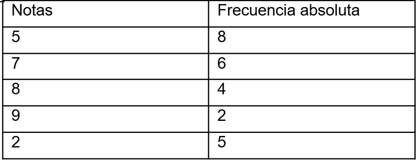

Tiempo restante: 80:00
Pregunta 1 de 80
En una caja hay 5 bolitas rojas y 3 negras. Se sacan 2 bolitas al azar sin reposición. ¿Cuál es la probabilidad de que ambas sean rojas?
35.7%Laura está resolviendo un ejercicio de patrones numéricos. Debe encontrar cuál serie rompe el patrón. ¿Cuál de las siguientes opciones no sigue la misma regla que las demás?
3, 6, 9, 12Que palabra corresponde la siguiente codificación: 112589123725

Una joven visionaria propone un modelo de negocio sostenible que combina tecnología y ecología. Su propuesta despierta interés en inversionistas y organizaciones ambientales por su enfoque innovador.
Aplicando los conceptos relacionados a la palabra marcada en negrita, seleccione el término excluido:
emprendedoraEn la siguiente tabla de frecuencias se detecta que la frecuencia relativa en el intervalo [20,25] es incorrecto. Corrija el error y determine el valor correcto
Mariana ha sido reconocida por su actitud solidaria con sus compañeros de clase, siempre está dispuesta a ayudar, compartir materiales y acompañar a quienes lo necesitan en momentos difíciles.
Aplicando los conceptos relacionados a la palabra marcada en negrita, seleccione el término excluido:
generosaLa fotógrafa se prepara para capturar imágenes en una boda al aire libre. Para lograr los mejores resultados, utiliza su cámara profesional, ajustando la luz y el enfoque según el ambiente.
Aplique los conceptos relacionados en la siguiente analogía: "fotógrafa es a cámara", como "_______ es a _____".
Pintor – lienzoUn comerciante adquiere 10 mochilas y 15 loncheras, gastando un total de $931. Si cada lonchera costó el 60% del precio de una mochila, determine el precio de una mochila y una lonchera.
Mochila: $45 y Lonchera: $27Vinicio trabaja en una empresa de generación de aplicaciones web, se encuentra diseñando una aplicación web para una institución educativa en la que debe generar una cuadrícula para el entrenamiento de atención y memoria de los estudiantes, con el objetivo de que contabilicen cuántas veces se repite el siguiente código 4554756996JFGEL.

En la siguiente tabla de distribución de frecuencias determine la media aritmética
Mariana es una estudiante universitaria que tiene clases de biología todos los lunes y miércoles. Además, los martes toma lecciones de piano en una academia de música y los jueves acude al gimnasio para estar en forma. Durante el fin de semana, Mariana trabaja en una cafetería cerca de su casa.
Infiera la información proporcionada:
El miércoles, Mariana asistirá al gimnasio para estar en formaDe una caja donde hay 24 esferos y 16 marcadores determine la probabilidad de extraer 2 esferos.
35,38%Un comerciante dispone en su bodega de busos y blusas. El precio unitario de los busos es de $18 y el de las blusas es del 85% del precio de los busos. Por temporada se ofrece un descuento del 14% en busos y 12% en blusas. ¿Cuánto se pagará por un buso y una blusa?
$28.00Un entrenador entrenó a 36 deportistas entre hombres ($200 c/u) y mujeres ($150 c/u). Cobró $6 600 en total. ¿Cuántos hombres y mujeres entrenó?
18 hombres y 18 mujeresLucía siempre fue una persona muy trabajadora y dedicada. Mientras algunos de sus compañeros buscaban excusas para no hacer tareas difíciles, ella asumía responsabilidades con compromiso. Con el tiempo, su esfuerzo fue reconocido con un ascenso, mientras que los demás seguían en la misma posición. Esta situación la llevó a pensar en el refrán: "El que madruga, Dios lo ayuda".
Aplique los conceptos relacionados en el texto presentado, seleccione la frase que mejor describa el refrán:
Las personas exitosas suelen tener buena suerte sin importar lo que haganUna organización no gubernamental, busca instalar agencias de ayuda humanitaria en los cinco países que más deuda externa han adquirido. Mediante un análisis rápido se conoce que cuatro de ellos son:
Chile, Francia, Irán, Laos,
Aplicando los criterios de series verbales, seleccione el quinto país que completará la lista.
NicaraguaDe la siguiente tabla de frecuencias determine la frecuencia absoluta en el intervalo [14- 17].
Mateo debe ingresar una palabra la cual está oculta en el siguiente cuadro. Descifre la palabra que debe ingresar Mateo.
Carlos confiaba ciegamente en su compañero de negocios, sin tomar precauciones legales al firmar acuerdos. A pesar de las advertencias, ignoró los posibles riesgos. Tiempo después, su socio lo traicionó y se quedó con parte del negocio. Carlos, dolido, recordó el refrán: "Más vale prevenir que lamentar".
Aplique los conceptos relacionados en el texto presentado, seleccione la frase que mejor describa el refrán:
Confiar en los demás siempre es la mejor estrategiaAntonio compró una bicicleta por $420,00 y un casco por $60,00. Al pagar con tarjeta de crédito, le aplicaron un cargo adicional de $62,40. Aplicando conceptos de porcentaje, ¿qué porcentaje adicional pagó Antonio por usar la tarjeta?
13,00%En la siguiente tabla de distribución de frecuencias determine la media aritmética
Durante la ceremonia de clausura, el director dio un discurso muy emotivo que hizo llorar a varios estudiantes y padres de familia, recordando los logros del año.
¿Cuál es el sinónimo más adecuado de la palabra en negrita "emotivo"?
FríoLa exposición de arte fue tan impactante que muchos visitantes se quedaron en silencio contemplando las obras por varios minutos.
¿Cuál es el sinónimo más adecuado de la palabra en negrita "impactante"?
ConfusaEn un curso compuesto por 22 hombres y 33 mujeres se quiere elegir un comité formado por 2 personas. Determine la probabilidad de elegir a dos hombres
15,56%En el departamento de desarrollo de software, se está creando un sistema de seguridad que requiere una contraseña secreta formada por cinco palabras. Solo se han descifrado las siguientes cuatro:
actúa, borrar, cambiar, defender
Aplicando los criterios de identificación de patrones, seleccione el quinto elemento que completará la contraseña.
edicionesA qué código numérico corresponde la siguiente palabra: ACTUAR
Mónica produce una obra de teatro, donde se colecta $16,55 por la entrada de cada infante, $28,75 por cada adulto, y para las personas de la tercera edad se tendrá un descuento del 28% respecto al costo del boleto de un adulto. A la obra ingresan 28 niños, 78 adultos y 48 personas de la tercera edad. Aplicando conocimientos matemáticos simples, seleccione las operaciones que deberá incluir la siguiente ecuación para calcular el total recaudado.

A qué código numérico corresponde la siguiente palabra: AUDITORIO

Julio, estudiante universitario se encuentra realizando una actividad asignada por su docente, para esto les entrega una plantilla, en la cual debe, identificar cuántas palabras NO pertenecen al grupo, siendo la palabra principal (SOL).

Una editorial se halla redactando un instructivo de manejo de plataformas virtuales. Un analista busca conocer las cinco palabras más utilizadas en el instructivo. Para ello, se realiza una búsqueda en el software de redacción, el cual solo muestra cuatro de ellas:
opera, naranja, libro, jerarquizar,
Aplicando los criterios de series verbales, seleccione la quinta palabra más empleada en la redacción del instructivo.
inocuarDe la siguiente tabla de frecuencias determine la frecuencia absoluta en el intervalo [10- 13].
Gracias a un programa de protección animal, un científico notó que, el número de tortugas presentes dentro de una nueva reserva ecológica nacional se ha ido incrementado anualmente, como se muestra a continuación:
20, 39, 77, 153, 305,
Aplicando los criterios de series numéricas, seleccione la cantidad de tortugas que se esperaría tener al sexto año.
610Un comerciante dispone en su bodega de 700 busos y 900 camisetas. Pero solo decide sacar a la venta el 22% de busos y el 27% de camisetas. ¿Cuántos busos y cuántas camisetas pondrá a la venta?
145 busos y 250 camisetasUn comité quiere elegir un equipo formado por 6 personas, si en el aula hay 36 ingenieros y 14 arquitectos. Cuál es la probabilidad de elegir 3 ingenieros y 3 arquitectos.
0,81%Alex y Miguel son dos sacerdotes franciscanos que sirven a Cristo con respeto y devoción. Alex se caracteriza por tener un humor desbordado. De hecho, la gente lo considera el cura más divertido de la iglesia. Por otro lado, Miguel es más serio que Alex, este clérigo sobresale por su labor humanitaria y es el misionero más generoso de la parroquia.
Infiera la información proporcionada:
Alex y Miguel son sacerdotes franciscanos que poseen humorLucía era conocida por su sinceridad. Siempre decía lo que pensaba sin filtros, incluso cuando sus palabras podían herir a otros. En una reunión familiar, hizo un comentario que ofendió profundamente a su tía. A pesar de que no fue con mala intención, la relación se vio afectada. Al reflexionar sobre lo ocurrido, recordó el refrán: "En boca cerrada no entran moscas."
Aplique los conceptos relacionados en el texto presentado, seleccione la frase que mejor describa el refrán:
Es mejor callar a tiempo que hablar y causar dañoEstuardo trabaja en un banco, al intentar ingresar al sistema no lo logra debido a que no recuerda el último digito de la contraseña, lo que recuerda es que esta corresponde a una secuencia de números y letras, siendo este el caso, identifique cuál es el dígito.
21zy 20xw 22vu 21ts 23rq 22po 24ñn ?
23mlGermán es dueño de una confitería, en el mes de marzo tuvo ventas por $200. En este mes los únicos productos que vendió fueron chupetes y chocolates. El precio unitario por chocolate fue de $0,50 y el precio unitario por chupete fue de $0,10. Se conoce que el total de productos vendidos fue de 600. Planifique las acciones matemáticas necesarias para calcular el número de chocolates y chupetes vendidos en el mes de marzo.
Se vendieron 355 chocolates y 245 chupetes.El salario mensual de un empleado en una empresa de productos textiles se calcula mediante la fórmula:
Salario=1,25S+15$
Donde S es el salario del mes anterior. Determine el salario que recibirá en el mes de marzo.
Un contador debe ingresar a la plataforma de declaración de impuestos. Para lo cual, el sistema de soporte al usuario le indica que debe completar una contraseña compuesta por cinco elementos. Si se conocen que los cuatro primeros son:
yermo, vulnerables, sincero, periódicos,
Aplicando los criterios de series verbales, seleccione el quinto elemento que completará la contraseña.
médicoNohemí se encuentra revisando los pagos que debe realizar este mes en su empresa, el pago que recibe cada trabador por hora de trabajo es de 12,56 dólares, Rolando trabajó 23 horas, Tenorio 22 horas, Galo 34 horas, Marco 26 horas, tomando en cuenta esta información, infiera el valor total que debería recibir cada trabajador por sus horas de trabajo.
Rolando 288,88; Tenorio 276,32; Galo 427,04; Marco 326,56En la ciudad de Ambato, las autoridades están planteando una ordenanza para reducir la congestión vehicular en el centro de la ciudad. Para lograrlo, han considerado oportuno realizar encuentros públicos con los ciudadanos para recopilar comentarios de los residentes sobre la política propuesta, con la finalidad de garantizar la ejecución de la misma. Infiera la información proporcionada:
La congestión vehicular es un problema de interés para las autoridades.En la siguiente tabla de frecuencias se detecta que la frecuencia relativa en el intervalo [6, 11] es incorrecto. Corrija el error y determine el valor correcto
Martín solía gastar todo su sueldo apenas lo recibía, sin pensar en el futuro. Mientras sus amigos ahorraban poco a poco para emergencias o proyectos, él prefería disfrutar el momento. Cuando se presentó una oportunidad de inversión, no tenía dinero disponible para aprovecharla. Fue entonces cuando recordó el refrán: "El que guarda, siempre tiene."
Aplique los conceptos relacionados en el texto presentado, seleccione la frase que mejor describa el refrán:
Disfrutar el presente es más importante que pensar en el futuroLorena vendió su automóvil en $13 572,00 después de aplicar un descuento del 8% sobre el precio original para cerrar el trato rápidamente.
Aplicando conceptos de operaciones matemáticas simples, calcule el precio inicial del automóvil antes del descuento.
El automóvil tenía un precio inicial de $14 600,00Un analista de sistemas busca reiniciar un servidor, con la finalidad de restablecer sus condiciones iniciales de fábrica. Para lograrlo, el sistema le solicita completar una contraseña de cinco elementos. En la pantalla se muestran sus cuatro primeros:
nación, lección, juguetero, hidroavión,
Aplicando los criterios de series verbales, seleccione el quinto elemento que permitirá resetear el ordenador.
ÍndiceMientras ambos animales recorrían la llanura, las vacas exploraban con curiosidad los verdes pastos. Aplique los conceptos relacionados en la siguiente analogía: "caballo es a potrillo", como "_______ a _______".
Vaca - terneraEn una biblioteca escolar se planea adquirir 30 escritorios. La directora dispone de $42 000 de presupuesto. Los escritorios individuales cuestan $1 200 y los dobles $1 800. Determine cuántos escritorios de cada tipo se pueden comprar dentro del presupuesto.
20 individuales y 10 doblesUna empresa necesita comprar 50 computadoras para sus oficinas. Las computadoras estándar cuestan $880 y las de alto rendimiento $1 320. Si el presupuesto total es de $53 680, ¿cuántas unidades de cada tipo puede adquirir?
30 estándar y 20 de alto rendimientoEn la siguiente tabla de distribución de frecuencias determine la media aritmética
Los podcasts son una herramienta educativa popular. Estos audios permiten a los oyentes acceder a todo tipo de información. Además, abarcan una amplia variedad de temas, desde noticias sobre política hasta historias de ciencia ficción. La facilidad de producir y distribuir este contenido ha permitido que voces diversas lleguen a una audiencia global, lo que refleja la libertad del conocimiento en la era digital.
Infiera la información proporcionada:
Los podcasts son audios académicos que facilitan el acceso a la información digital.Luis es un joven tenaz que, a pesar de múltiples fracasos y obstáculos, continúa trabajando duro para alcanzar sus metas académicas. Su constancia ha sido admirada por sus compañeros y profesores.
Identifique el sinónimo de la palabra marcada en negrita: "tenaz".
persistenteDe una caja donde hay 15 esferos y 15 marcadores determine la probabilidad de extraer 2 esferos y un marcador.
12,93%Para descargar una visa temporal de turismo, válida por 90 días, un turista argentino deberá completar una clave compuesta por 5 elementos. La interfaz de la embajada americana le muestra sus 4 primeros.
luna, nación, orador, quedar,
Aplicando los criterios de series verbales, seleccione el quinto elemento que completará la clave.
tenderEl director de una compañía tecnológica estudia un escenario posible que podría presentarse en el lanzamiento de su nuevo producto, anticipando una respuesta favorable del mercado. La seguridad que muestra el director genera confianza en su equipo para afrontar este desafío.
Identifique el sinónimo de la palabra marcada en negrita: posible
improbableMario se encuentra realizando un servicio delivery, para realizar la entrega el ingresa la información recibida al buscador, pero no obtiene resultados, por lo que, nota que existen errores que se produjeron al momento de copiar estos datos, él debe, identificar si los nombres, dirección y teléfono son iguales o distintos.
Para descargar el audiolibro "El Arte de la Guerra" de la plataforma "AudioRecords", un usuario deberá completar una clave compuesta por 5 elementos. En la interfaz de la plataforma se muestran sus 4 primeros:
mapeo, maquina, maritimo, masticar,
Aplicando los criterios de identificación de patrones, seleccione el quinto elemento que completará la clave.
metalEn una empacadora de alimentos, en la ciudad de Quito, la puerta de acceso al cuarto frío sufre una avería. Para reiniciar su sistema, la persona a cargo deberá completar una contraseña compuesta por 5 elementos. El panel de la puerta muestra sus 4 primeros:
17, 34, 102, 408,
Aplicando los criterios de series numéricas, seleccione el quinto elemento que completará la contraseña.
2038Carlos siempre ha sido muy puntual y organizado. Cada día llega a tiempo a su trabajo y prepara con anticipación todo lo que necesita para sus tareas. Mientras tanto, sus compañeros a menudo llegan tarde o dejan todo para último momento. Gracias a su disciplina, Carlos logra cumplir con sus metas y recibe elogios constantes de su jefe. Esto le recuerda el dicho: "No dejes para mañana lo que puedas hacer hoy".
Aplique los conceptos relacionados en el texto presentado, seleccione la frase que mejor describa el refrán:
Es mejor descansar hoy para trabajar mañanaEn la siguiente tabla de distribución de frecuencias determine la media aritmética
Lisa vende boletos para un bingo que se realizará después de tres semanas. Las personas que compren durante la primera semana, reciben una rebaja del 34%, mientras que quienes compren durante la segunda y tercera semana deberán pagar $10,50 por el ticket. En la primera semana vende 56 boletos, en la segunda 90 y en la tercera 110.

Aplicando conocimientos matemáticos simples, elija las operaciones oportunas en la ecuación para obtener el total recaudado:
10,5 + 110 + 10,5 x 90 - 10,5 + (100% - 34%) x 56 = 2488,08Jaime es dueño de un local comercial, él se encuentra separando las prendas de vestir según sus códigos, por lo que requiere identificar cuántas prendas corresponden al mismo código: 3654001369885.
Andrés compra 8,500 cuadernos para una escuela a $2.75 cada uno. Al finalizar la compra, le ofrecen un descuento del 5% sobre el total. Usando operaciones matemáticas simples, determina el valor final que Andrés debe pagar.
22187,50Para acceder a los planos de los rodetes de una nueva generación de bombas centrífugas, un ingeniero debe ingresar una contraseña de seguridad compuesto por cinco elementos. Sin embargo, el monitor le muestra en pantalla solo cuatro de ellos:
tabaco, tejado, tildar, tolete,
Aplicando los criterios de identificación de patrones, seleccione el quinto elemento que completará la contraseña.
turismoLorena se encuentra viajando, en este viaje ella debe realizar una escala en España, para poder realizarla ella debe seguir un orden lógico.
Identifique el orden a seguir.
1. ir al aeropuerto, esperar el avión, comprar el boleto, subir al avión, bajar del avión, comprar el boleto, subir al avión, bajar del avión, salir del aeropuerto.
2. ir al aeropuerto, comprar el boleto, subir al avión, esperar el avión, bajar del avión, comprar el boleto, subir al avión, bajar del avión, salir del aeropuerto.
3. ir al aeropuerto, comprar el boleto, esperar el avión, subir al avión, bajar del avión, comprar el boleto, bajar del avión, subir al avión, salir del aeropuerto.
4. ir al aeropuerto, comprar el boleto, esperar el avión, subir al avión, bajar del avión, comprar el boleto, subir al avión, bajar del avión, salir del aeropuerto.
Para su departamento de informática, Javier compra 12 licencias de software antivirus a $450,75 cada una y 20 licencias de software de oficina a $320,40 cada una. Aplicando conceptos de resolución de problemas matemáticos simples, determine los subtotales que deberá pagar por cada tipo de licencia.
Antivirus: $5,409.00; Oficina: $6,408.00Andrés está rindiendo una evaluación de atención y concentración, su docente le entregó una cuadrícula de letras representadas con números y le pide que descifre el código correcto según la palabra entregada. "ADOLESCENTE"
Una institución educativa necesita contratar 4 profesores de ciencias y 3 de literatura. Dispone de un presupuesto mensual de $5 580 para pagar sus sueldos. Si cada profesor de literatura gana un 25% más que uno de ciencias, determina el sueldo mensual de cada tipo de profesor.
El salario de un profesor de ciencias es de $700 y de un profesor de literatura es de $875Hernán es supervisor y desea analizar el número de reactivos hechos por sus trabajadores mensualmente. Conoce que el promedio mensual de reactivos realizados es de 38. Al analizar la tabla se percata que ciertos valores han sido omitidos.

Aplicando conceptos de operaciones matemáticas simples, identifique el número de reactivos efectuados por William.
43Un estudiante requiere activar nuevos complementos de un software de simulación térmica. Para ello, es necesario completar un código de validación, el cual, consta de seis elementos relacionados entre sí. Sin embargo, solamente se conocen cinco de ellos:
82960, mgnke, 15374, fjhli, 58304,
Aplicando los criterios de ordenamiento y relación seleccione el sexto que activarán los complementos.
jnheiCarolina dejó como herencia a su hija una caja fuerte, no le entregó una contraseña, pero en una nota le indicó que, para descifrar la misma debe elegir el número que corresponde a cada letra, siendo la palabra clave (DIAMANTE) identifique la contraseña de la caja fuerte.

Juan, docente en una unidad educativa asigna una actividad a sus estudiantes, para ello, les explica que Doménica se encuentra realizando el proceso de preparación de un pastel y les pide que elijan cuál es el orden más lógico que debe seguir para la preparación.
1.- comprar los ingredientes, preparar la mezcla, poner la mezcla en el molde, prender el horno, sacar el pastel del horno, apagar el horno.
2.- comprar los ingredientes, preparar la mezcla, poner la mezcla en el molde, prender el horno, apagar el horno, sacar el pastel del horno.
3.- comprar los ingredientes, preparar la mezcla, poner la mezcla en el molde, sacar el pastel del horno, prender el horno, apagar el horno.
4.- comprar los ingredientes, preparar la mezcla, prender el horno, apagar el horno, sacar el pastel del horno, poner la mezcla en el molde.
En la clase de lengua y literatura, en la actividad áulica, el docente presenta una tabla que contiene letras "b" y "d", para el desarrollo de la actividad, se requiere que los estudiantes identifiquen cuántas letras "b" y "d" existen.
Andrea vende 1,200 litros de leche cada semana. En un día logró vender 5/10 del total. ¿Cuántos litros le faltan por vender?
600 LEn medio del silencio del bosque, Clara contemplaba la serenidad del paisaje. El canto suave de los pájaros, el murmullo del arroyo y la brisa ligera que movía las hojas creaban una atmósfera de calma y reflexión.
Aplicando los conceptos relacionados a la palabra marcada en negrita, seleccione el término excluido:
tranquilidadPaulina se encuentra realizando una actividad propuesta por su docente, para esto el docente entregó una cuadrícula de letras representa por números indicándole que debe, inferir qué código se obtiene al elegir los dígitos que representan a cada letra de la siguiente palabra: COMPUTADORA.
Una red social busca conocer los cinco nombres de usuario más empleados al momento que se registran en su plataforma. Sin embargo, la plataforma solamente muestra una lista con cuatro de ellos:
Noel, Luis, Juan, Héctor,
Aplicando los criterios de series verbales, seleccione el quinto elemento que completará la lista.
IvarEl salario mensual de un empleado en una empresa de productos textiles se calcula mediante la fórmula:
Salario=1,20S-50$
Donde S es el salario del mes anterior. Determine el salario que recibirá en el mes de mayo
Carla es docente de una unidad educativa quien asigna una tarea a sus estudiantes, para lo cual, les entrega una palabra y les indica que deben encontrar su orden inverso. Identifica el orden inverso de la siguiente palabra: industrialización
1.- nóicazilaritsudni
2.- nóicaziliartsudni
3.- nóicazilairtsudni
4.- nóicazilairtusdni
En una empresa se encuentran reunidos 10 diseñadores y 15 programadores. Se desea seleccionar al azar 5 personas para un nuevo proyecto. ¿Cuál es la probabilidad de elegir 3 programadores y 2 diseñadores, sin reemplazo?
34,12%